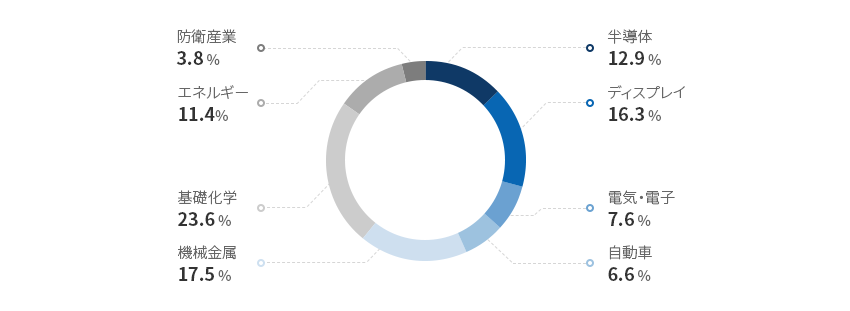

精密化学
- Home
- Why KOREA
- 産業
- 精密化学
精密化学
Fine chemicals
-
世界5位 化学産業市場 コンテンツを閉じる世界5位 化学産業市場韓国の化学産業は出荷金額準で世界5位を占める巨大な産業で約1,580億ドル規模を誇り
世界市場の4.0%を占めている。 化学産業の生産能力を測る尺度の「エチレン(Ethylene)生産能力」において
韓国は世界4位を占め、2020年全世界のエチレン生産量1億9,410万トンのうちの約5.1%の981.6万トンを生産している。
韓国の化学メーカーは、化学産業専門の市場調査機関である英ICISが発表している「ICIS Top 100 Chemical Companies(ICIS, September 2021)」にLG化学、
ロッテケミカル、SKグローバルケミカル、ハンファソリューション、GSカルテックスの5社が含まれており世界的な水準を誇っている。
高品質の原料を安定的に十分供給できる川上産業を保有する韓国の精密化学産業は、
資本・知識・技術集約型の構造を通じて二次電池、自動車、ディスプレイなど多様な韓国の川下産業の中核素材及び応用素材を
生産している。精密化学産業は多様でグローバルな川下産業の着実な成長に後押しされ、持続的に成長している。2020エチレン生産能力 世界 194.1(単位 : 百万トン/年)- 米国 20.6
- 中国 16.6
- サウジアラビア 9.1
- 韓国 5.1
- イラン 3.8
- インド 3.8
※ 資料 : 韓国石油化学協会
2021年韓国のICIS 100大化学企業- 6位: LG化学
- 23位: ロッテケミカル
- 43位: SKグローバルケミカル
- 73位: ハンファソリューション
- 76位: GSカルテックス
※ 資料 : ICIS

-
多様な川下産業及び輸出増加に基づいた 持続的な成長を期待 コンテンツを開く多様な川下産業及び輸出増加に基づいた 持続的な成長を期待韓国は化学産業の主要川下産業である自動車、電気・電子、繊維、建設、プラスチックなどが発達した製造業強国であり、
精密化学産業もともに発展してきた。 韓国の精密化学産業の最大輸出国は中国であり、
日本、ベトナム、香港などの東アジア市場を中心に成長し、ドイツや米国など東アジア以外の地域への
輸出も増加している。 2020年の輸出額は生産及び内需が着実に成長したことによって299.5億ドル(MTI22基準)となり、
輸入額を超えている。グローバル精密化学市場は2021年1,809.3億ドルから2025年に2,387.4億ドルまで成長し、年平均7.2％の
高い成長率を示している有望市場である。特にディスプレイ・半導体・LCD/LED・二次電池(バッテリー)素材分野の
急速な成長が目立っており、LG化学・SKイノベーション・ロッテ精密化学・ハンファソリューション・錦湖石油化学など国内企業の投資が拡大している。また、KAIST、POSTECHなどの化学関連学科が開設されている教育訓練機関は計348校で、毎年約3万人の人材が輩出され、
素材・部品・装備のインフラ構築を強化するために国家研究インフラを18ヵ所から51ヵ所に拡大する計画である。 特に2015年以降、化学分野の
産業技術人材に占める研究員及び試験員の割合は全化学産業関連従事者の25.3%で、3年間年平均8.3%増加し、操作員及び組立員などの
生産関連職種は0.6%減少するなど、高度専門職の割合が持続的に増えている。「韓国内の主要川下産業の現況」韓国内の主要川下産業の現況 主要産業, グローバルポジションと主要企業の現況 主要産業 グローバルポジションと主要企業の現況 自動車 - ㆍ世界5位の自動車生産国(351万台、‘20年)
- エコカーの輸出は27.6万台で持続的に増加し、輸出総額の19.1%。電気自動車、水素自動車などに必要なスペシャルティケミカル素材の需要は安定的に増加している。
システム半導体 - サムスン電子は2030年までシステム半導体分野の1位を目指して約1,143億ドルを投入する計画
- システム半導体は複雑な構造、精密設計が必要という特性からスペシャルティケミカル素材需要が急増
ディスプレイ - ㆍ韓国ディスプレイ、世界市場シェア1位(’20年)
- OLED(有機EL)パネルは3年連続輸出100億ドルを達成し、ディスプレイ全体の輸出に占める割合が 60%を超え、世界市場シェア1位を維持
二次電池 - 韓国の二次電池の中でIT用小型二次電池は‘11年から世界トップを維持しており、電気自動車用中型・大型二次電池も中国に近づいている。
- グローバル電気自動車メーカーに二次電池を供給する技術力を確保しており、電気自動車用二次電池の世界市場シェアにおいてLG、サムスン、SKなどが1位など、上位を占めている。
※ 資料 : 韓国石油化学協会、 韓国貿易協会
※ 注 : 生産(左) / 内需(左) / 輸出(右) / 輸入(右) -
大型川下産業の需要に対応した 海外企業の活発な韓国進出 コンテンツを開く大型川下産業の需要に対応した 海外企業の活発な韓国進出韓国に進出したグローバル化学企業は、大型川下産業(半導体、二次電池、電気・電子)の需要に対応して高付加製品を供給する
ケースが多く、外国人直接投資においても投資申告金額基準で化学産業が7億7,799万ドルと、製造業内で
最も多い投資を受けた産業となっている。特に、アジア地域を中心に投資が活発に行われ、
その中でも中国は3億9千万ドルで最も多く、欧州地域もドイツを中心に多くの投資をしている。日本、ドイツ、スイス、中国など多様な国から単独法人や合弁企業という形態で韓国に進出しており、機能性コーティング剤・フィルム、,
二次電池、エンジニアリングプラスチック、半導体などの多様な分野で企業活動が活発に展開されている。日本の東レグループの
子会社の東レ先端素材は、サムスン電子、現代自動車、SKなど電子・自動車部門のグローバル企業がある
韓国市場の重要性を認識しており、2017年から2020年まで総額1兆ウォンを投資した。また、フォルダブルフォン用フィルム、
OLED(有機EL)用素材、次世代ディスプレイの高付加価値フィルム素材の開発、積層セラミックコンデンサ(MLCC)のための
新素材開発のような未来素材の開発に投資と雇用を増やすと発表した。「韓国進出の主要海外企業」韓国進出の主要海外企業 国, 親会社名, 所在地, 主要生産品目 国 親会社名 所在地 主要生産品目 スイス Oerlikon balzers 京畿道平澤 PVD、PACVD、ベースコーティング、コーティング装備  日本
日本
Lintec 京畿道平澤 粘接着フィルム、半導体用フィルム
日本
Toray 慶尚北道亀尾、全羅北道群山 二次電池用バッテリーセパレータフィルム 中国 GEM 慶尚北道浦項 リチウム二次電池正極材前駆体 ドイツ BASF 慶尚北道金泉 POM(ポリオキシメチレン) ドイツ Merck 京畿道安城市 半導体パッケージング、薄膜コーティング、液晶素材  ベルギー
ベルギー
Umicore 忠清南道天安 二次電池正極材料
ベルギー
Solvay 全羅北道群山 タイヤ製造用先端環境配慮型シリカ  米国
米国
Air Products 京畿道平澤 産業用ガス製造 -
素材・部品・装備産業育成の強力な推進と 川下産業の発展支援 コンテンツを開く素材・部品・装備産業育成の強力な推進と 川下産業の発展支援韓国政府は企業の苦情・苦渋事項の解消及びサプライチェーンの安定に向けて努力している。素材・部品・装備政策を通じて
中核戦略技術情報、法律分析サービスなどを支援し、企業の投資誘致の全過程をサポートしており、海外法人を買収する場合は
買収金額の10％の税額控除支援、M&Aを通じて技術を確保した企業に3年間最大10億ウォンまで技術の内在化を支援する。
後続事業の「2021年の素材・部品技術開発事業(2021.2.1)」の新規R&D課題では計1,949.5億ウォンが支援され、
その中でも化学は46課題、460.1億ウォンで最も多くの予算支援を受けている。川下産業育成政策において、政府は二次電池産業の発展に向けて「2030二次電池産業(K-Battery)発展戦略(2021.7)」を
確立しており、素材・部品・装備の要素技術の開発のために2030年まで民間が40.6兆ウォンを投資し、大規模な予備的適用性調査(プレFS)を行っている。
二次電池の中核技術を国家戦略技術に選定して税制支援を強化し、R&Dには最大40~50%、施設投資には20%の税額を
控除する計画である。また、半導体産業ではシステム半導体のための需要連携R&D(毎年300億ウォン)、ファブレス専用ファンド(1,000億ウォン)
の支援や設備投資税額控除のサンセットの延長などを支援し、AI半導体など、次世代半導体技術の開発に今後10年間1兆ウォン以上を
投資する計画を立てた。「2021素材部品技術開発事業の新規R&D課題の産業別予算」
2021素材部品技術開発事業の新規R&D課題の産業別予算 区分, 課題数, 予算 区分 半導体 ディスプレイ 電気ㆍ電子 自動車 機械金属 基礎化学 エネルギー 防衛産業 合計 課題数 26 23 17 13 28 46 22 5 181 予算 (億ウォン) 251.0 317.3 148.8 115.6 340.8 460.1 221.6 74.3 1,949.5 12.9% 16.3% 7.6% 6.0% 17.5% 23.6% 11.4% 3.8% 100.0% ※ 資料 : 産業通商資源部
※ 資料 : 2021 素材部品技術開発事業 -
圏域別精密化学産業クラスターの構築と 素材部品装備特化団地の指定 コンテンツを開く圏域別精密化学産業クラスターの構築と 素材部品装備特化団地の指定精密化学産業のクラスターは首都圏、嶺南(慶尚道)圏、湖南(全羅道)圏に区分することができ、蔚山、麗水、温山などの
産業団地を中心に精密化学クラスターが位置している。団地内の化学研究院、化学支援センター、
低炭素知能型素材部品産業団地などを通じて地方自治体の支援が行われている。政府は素材部品装備特化団地の指定(2021.2.23.)を通じて、中核素材・部品・装備の需要－供給企業及び
基盤施設を集積させる一方、クラスターとして育成し、先端産業の世界の工場を目指す。
指定された5つの素材部品装備特化団地の中で龍仁半導体クラスター、梧倉の二次電池産業団地、天安・牙山のディスプレイ
産業団地とテクノバレー3ヵ所が化学産業の川下産業であるだけにバリューチェーンの分析を通じた補完分野のR&D、輸出支援、
専門研究人材支援、投資誘致インセンティブの提供など、さまざまな支援が計画、推進されている。特に二次電池素材部品装備産業特化団地にはサプライチェーン強化のための正極材・電解質・セパレータなどの
化学企業が 多数入っており、リチウムイオン電池の生態系が構築されるなど、活発な企業成長のための支援が整っている。「二次電池素材・部品・装備特化団地の立地」立地環境- (サプライチェーン)LGES及び約40の協力会社(25社入居予定)など正極材ㆍ電解質・セパレータ及びモジュール・パック企業が多い。
- (生態系)基礎研究(テクノポリス)、実証(梧倉科学産業団地)、生産(第2産業団地)など、リチウムイオン電池の生態系が構築されている。
※ 資料 : 2030 二次電池産業発展戦略「圏域別の主要内容」-
首都圏
- 中部圏に化学研究所が立地しており高効率の合成新物質の創出を研究
- 京畿道半月始華産業団地に中小企業専用の精密化学ミニクラスター及びスマート産業団地を造成
-
嶺南(慶尚道)圏
- 蔚山市石油化学国家産業団地内に各種の化学研究院が所在
- 温山学南精密化学産業団地にスマート化学支援センターをオープン
-
湖南(全羅道)圏
- 麗水石油化学国家産業団地周辺の光陽湾圏精密化学素材クラスターを再構築し、低炭素知能型素材部品産業団地を育成
「二次電池工場の分布」-
華城
- FOOSUNG: 二次電池電解質
-
忠州
- コスモ新素材: 正極材
-
清州
- エコプロBM: 正極材
- E&D: 正極材
- ダブル・スコープ: 電解液
- LG化学: 二次電池
- SKイノベーション: 電解液
-
天安
- ユミコア: 正極材
-
公州
- ソルブレイン: 電解液
-
牙山
- 帝人リエルソート: 電解液
-
大田
- リケム: 電解液素材
-
全州
- エギョン油化全州: 負極材
-
益山
- イルジンマテリアルズ: 負極材銅箔
-
井邑
- KCFT: 負極材銅箔
-
亀尾
- 東レ BSF: 電解液
- パワー・カーボン・テクノロジー: 負極材
- LG化学 : 正極材
-
浦項
- ポスコESM : 正極材
- エコプロGEM: 正極材
-
麗水
- ジェイセル: 電解液
-
蔚山
- STM: 正極材
- ENF: 電解液
- ソルベイケミカル: 添加剤
- サムスンSDI: 二次電池
-
大邱
- LNF: 正極材
※ 資料協力：産業研究院「韓国3大化学産業団地の現況」大山化学産業団地- 面積 : 15.325.000 ㎢
- 生産規模(’20) : 260億ドル
- 輸出額(’20) : N/A
- 雇用人数 : 4,300人
- 外国人投資企業の現況 : OCI ど
蔚山化学産業団地- 面積 : 74,838,000 ㎢
- 生産規模(’20) : 530億ドル
- 輸出額(’20) : 212億ドル
- 雇用人数 : 20,700人
- 外国人投資企業の現況 : BASF, Dupont, Wacker, INEOS ど
麗水化学産業団地- 面積 : 31,971,000 ㎢
- 生産規模(’20) : 390億ドル
- 輸出額(’20) : 174億ドル
- 雇用人数 : 21,100人
- 外国人投資企業の現況 : BASF, Versalis ど
※ 資料 : 韓国石油化学協会(KPIA)「主要投資事例」主要投資事例 年度, 年度, 投資企業, 分野, 投資地域(韓国内), 主要投資理由 年度 年度 投資企業 分野 投資地域
(韓国内)主要投資理由 2019 1 A社 (米国) 一般化学 忠清南道天安 産業用ガス工場の増設 2 S社 (ベルギー) 特殊化学 全羅北道群山 環境配慮型タイヤ素材 生産工場の増設 3 U社 (ベルギー) 二次電池 忠清南道天安 二次電池素材生産工場の増設 2020 1 H社 (中国) 一般化学 全羅南道光陽 アルミニウム工場の建設(FTA輸出モデル利用) 2 T社 (日本) 特殊化学 慶尚北道亀尾 炭素繊維材料など先端素材工場の増設 3 N社 (中国) 二次電池 忠清北道 忠州 二次電池正極材工場の新設 2021 1 A社 (豪州) 戦略資源 忠清北道梧倉 レアアース及びレア金属工場の新設 2 R社 (米国) 特殊化学 全羅南道麗水 国内Joint Venture設立による環境配慮型接着剤工場の新設 3 H社 (中国) 二次電池 全羅南道光陽 国内Joint Venture設立によるバッテリーリサイクル工場の新設


Invest KOREA
化学/素材PM
パク・ボンギ
キム・スンヒョン
T.+82-2-3460-7729
おすすめの立地情報
産業団地情報
[Chungcheongbuk-do Chungju City] Manjeong General Industrial
Complex
Click [Go to Detailed Information] to go to the relevant information screen of
Smart K-Factory service of Industrial Complex Corporation.
-
Complex nameManjeong General Industrial Complex
-
Initial designation date2010.02.05
-
Designated area(m2)50,401
-
ManagementChungcheongbuk-do Chungju City
-
Nearby RailwayDalcheon Station
-
Distance from station(km)5
-
Nearby AirportCheongju International Airport
-
Distance from airport(km)51
-
Industrial water Supply capacity(ton/day)177(㎥/day)
-
Affiliation local governmentChungcheongbuk-do Chungju City
-
Population210,304
産業団地情報
[Ulsan Metropolitan City Nam-gu] Ulsan Techno General Industrial
Complex(Ulsan Free Economic Zone)
Click [Go to Detailed Information] to go to the relevant information screen of
Smart K-Factory service of Industrial Complex Corporation.
-
Complex nameUlsan Techno General Industrial Complex(Ulsan Free Economic Zone)
-
Initial designation date2013.06.20
-
Designated area(m2)1,286,977
-
ManagementUlsan Metropolitan City
-
Nearby RailwayTaehwagang Station
-
Distance from station(km)9
-
Nearby AirportUlsan Airport
-
Distance from airport(km)15
-
Industrial water Supply capacity(ton/day)2614(㎥/day)
-
Affiliation local governmentUlsan Metropolitan City Nam-gu
-
Population1,140,310
産業団地情報
[Jeollabuk-do Gunsan City] Imphi Agricultural Industrial Complex
Click [Go to Detailed Information] to go to the relevant information screen of
Smart K-Factory service of Industrial Complex Corporation.
-
Complex nameImphi Agricultural Industrial Complex
-
Initial designation date2011.06.20
-
Designated area(m2)239,156
-
ManagementJeollabuk-do Gunsan City
-
Nearby RailwayDaeya Station
-
Distance from station(km)7
-
Nearby AirportGunsan Airport
-
Distance from airport(km)31
-
Industrial water Supply capacity(ton/day)426(㎥/day)
-
Affiliation local governmentJeollabuk-do Gunsan City
-
Population267,982
産業団地情報
[Chungcheongnam-do Yesan County] Yesan New Material General Industrial
Complex
Click [Go to Detailed Information] to go to the relevant information screen of
Smart K-Factory service of Industrial Complex Corporation.
-
Complex nameYesan New Material General Industrial Complex
-
Initial designation date2011.06.16
-
Designated area(m2)483,670
-
ManagementChungcheongnam-do Yesan County
-
Nearby RailwaySillyewon Station
-
Distance from station(km)22
-
Nearby AirportCheongju International Airport
-
Distance from airport(km)87
-
Industrial water Supply capacity(ton/day)788(㎥/day)
-
Affiliation local governmentChungcheongnam-do Yesan County
-
Population78,420
産業団地情報
[Busan Metropolitan City Gijang County] Busan New Material General
Industrial Complex
Click [Go to Detailed Information] to go to the relevant information screen of
Smart K-Factory service of Industrial Complex Corporation.
-
Complex nameBusan New Material General Industrial Complex
-
Initial designation date2013.01.16
-
Designated area(m2)255,229
-
ManagementBusan Economic Promotion Agency
-
Nearby RailwayBusan Station
-
Distance from station(km)47
-
Nearby AirportGimhae International Airport
-
Distance from airport(km)48
-
Industrial water Supply capacity(ton/day)0.27(㎥/day)
-
Affiliation local governmentBusan Metropolitan City Gijang County
-
Population172,288
産業団地情報
[Jeollanam-do Mokpo City] Ceramic General Industrial Complex
Click [Go to Detailed Information] to go to the relevant information screen of
Smart K-Factory service of Industrial Complex Corporation.
-
Complex nameCeramic General Industrial Complex
-
Initial designation date2009.06.05
-
Designated area(m2)116,361
-
ManagementJeollanam-do Mokpo City
-
Nearby RailwayMokpo Station
-
Distance from station(km)5
-
Nearby AirportMuan International Airport
-
Distance from airport(km)36
-
Industrial water Supply capacity(ton/day)-
-
Affiliation local governmentJeollanam-do Mokpo City
-
Population226,875